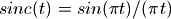
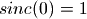
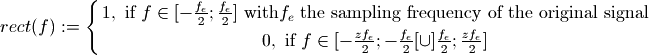
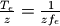

2.1.1. Sinus cardinal interpolation as “Fourier Zero Padding”¶
2.1.1.1. Sinus cardinal interpolation¶
In [Getreuer, 2011] are reminded the benefits of the sinus cardinal for interpolation purpose. Defined as , with , the sinc function is the kernel associated with the Wittaker-Shannon interpolation. Its Fourier Transform is the rectangular signal.
In [1]: import numpy as np;
In [2]: x = np.linspace(-10, 10, 21);
In [3]: sincx = np.sin(x*np.pi)/(x*np.pi);
In [4]: sincx[10] = 1;
In [5]: import matplotlib.pyplot as plt;
In [6]: plt.subplot(211); plt.plot(x,sincx,'.', label='1Dsinc');plt.legend();
In [7]: plt.subplot(212); plt.plot(np.fft.fftshift(np.fft.fft(np.fft.ifftshift(sincx))),'-', label='fft(sinc)');plt.legend();
Since a spatial convolution of two signals is, under suitable conditions that we suppose valid here, equivalent to a point wise product of their fourier transform, then the sinc interpolator can be easily and efficiently implemented in frequential domain by zero padding the original spectrum up to a number of samples that will define the upscaling factor. Say the signal contains N samples and the zooming factor is 2, then N zeros shall be added to the spectrum of the signal to upsample it by a factor 2.
2.1.1.2. Simple example¶
Below are two simple methods defined to perform “Fourier zero padding” of a signal :
In [8]: def zero_pad(s, zoom_factor=2, dtype=np.complex):
...: # initialize data
...: n = s.size
...: N = n*zoom_factor
...: zero_padded_s = np.zeros(N,dtype=np.complex)
...: # not the same process if even or odd number of samples
...: if n%2 == 0:
...: zero_padded_s[n/2:n/2+n] = s
...: else:
...: zero_padded_s[(n+1)/2:(n+1)/2+n] = s
...: return zero_padded_s
...:
In [9]: def fft1D_zero_pad(tf, zoom_factor=2):
...: # shift the signal as it is easier to fill new frequencies then
...: tf_s = np.fft.fftshift(tf)
...: zero_padded_tf_s = zero_pad(tf_s, zoom_factor=zoom_factor)
...: zero_padded_tf_s *= zoom_factor
...: # return the shifted back spectrum
...: return np.fft.ifftshift(zero_padded_tf_s)
...:
Then we can use it to upsample a cosine by a factor 2 :
In [10]: def create_1D_cosine(n=100,w=1):
....: x = np.arange(-2 * np.pi, 2 * np.pi, 4 * np.pi / n)
....: return x, np.cos(x*w)
....:
In [11]: def zoom_freq_zero_padd(signal, zoom_factor=2):
....: tf_s = np.fft.fft(signal)
....: zpd_tf = fft1D_zero_pad(tf_s, zoom_factor)
....: return np.fft.ifft(zpd_tf)
....:
In [12]: z=2;
In [13]: n=100;
In [14]: w=4;
In [15]: x, cosx = create_1D_cosine(n,w);
In [16]: xz, cosx_z_perfect = create_1D_cosine(2*n,w);
In [17]: cosx_z = zoom_freq_zero_padd(cosx, zoom_factor=z);
In [18]: plt.plot(xz, cosx_z_perfect, label='cos(x) analytically zoomed');plt.legend();
In [19]: plt.plot(xz, cosx_z, linestyle=':', label='cos(x) zoomed by \"fourier zero padding\"');plt.legend();
In [20]: plt.plot(xz[::2], cosx, 'o', label='cos(x) original data');plt.legend();
Note
One might have notice that in the fft1D_zero_pad() method, the padded spectrum energy is multiplied by the upsample factor to keep the original spectrum energy and compensate for the add of zero frequencies.
2.1.1.3. Summary¶
As expressed by this over simplified example, the sinc interpolation can be easily implemented in fourier domain. To
emulate a zoom by a factor  with the sinus cardinal, this spectrum
ought to be pixel-wise multiplied by a rectangular function, such that :
with the sinus cardinal, this spectrum
ought to be pixel-wise multiplied by a rectangular function, such that :

Then the sampling frequency has been multiplied by and the original spatial signal is zoomed accordingly.
To achieve the same goal in spatial domain directly, we would have had to convolve the signal with the sinc kernel. This
kernel should have been recomputed (or tabulated) for each fractional position with a  step,
which, depending on the kernel support, can really be time consuming.